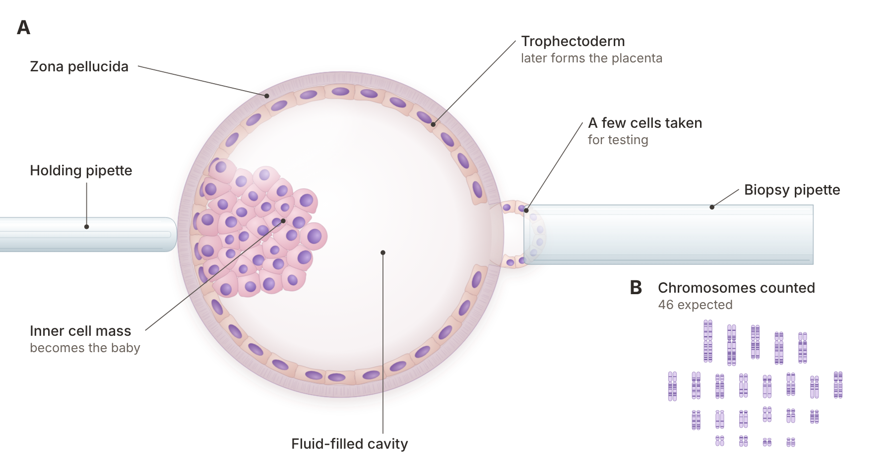

Quick answer: PGT-A testing (preimplantation genetic testing for aneuploidy) checks a few cells from each IVF embryo to see whether it has the expected 46 chromosomes. It helps you choose which embryo to transfer first and can mean fewer transfers and fewer pregnancy losses. It does not create healthier embryos, and for people under 38 with several good embryos, a large trial found it did not raise the overall chance of a baby.
In this article
Does PGT-A Testing Raise Your Chance of a Baby, or Just Cut the Number of Transfers?
PGT-A Testing vs. Transferring Without Testing: How to Decide
PGT-A is a lab test done on embryos during IVF to count their chromosomes before one is chosen for transfer. An embryo with the right number of chromosomes is called euploid; one with an extra or missing chromosome is called aneuploid.
Chromosome errors matter because they are one of the most common reasons an embryo does not implant or a pregnancy ends early. Most of these errors come from the egg, and they become more common with age. That is why the question "should I test my embryos?" comes up in almost every IVF consult.
PGT-A is different from two related tests. PGT-M looks for one specific inherited condition, such as cystic fibrosis, when a parent is a known carrier. PGT-SR looks for problems caused by a parent's own chromosome rearrangement. This guide is about PGT-A only, the test most people mean when they say "genetic testing of embryos".
People usually consider PGT-A for one of four reasons. Each is reasonable, and each is worth checking against the evidence before you pay for it.
This is the most common reason. One patient on a fertility forum summed it up: "I would pgt test again for peace of mind." Knowing an embryo is euploid can make each transfer feel less like a guess. The research below shows testing does lower the rate of pregnancy loss in some groups.
If you have several embryos, testing lets you skip the ones least likely to work. That can save months and the cost of extra frozen embryo transfers. It saves time; it does not add embryos.
If you plan more than one child, knowing how many euploid embryos you have can help you decide whether to do another egg retrieval now, while you are younger.
Many people ask the same thing another patient did: "Did you feel it was reliable?" PGT-A is accurate at counting chromosomes in the cells it receives, but those cells come from the outer layer of the embryo, not the part that becomes the baby. That gap is the reason for "mosaic" results, explained below.
PGT-A adds a lab step between growing your embryos and transferring one. Here is the order of events in a typical cycle.
Egg retrieval and fertilization. Eggs are collected and fertilized, often by ICSI (one sperm placed into each egg).
Growth to blastocyst. Embryos grow in the lab for 5 to 7 days. At Aurea they grow undisturbed in an EmbryoScope time-lapse incubator, which takes an image about every 10 minutes.
Biopsy. On day 5, 6 or 7, an embryologist removes a few cells from the trophectoderm, the outer layer that later forms the placenta. The inner cell mass, which becomes the baby, is left alone.
Freezing. Every biopsied embryo is frozen by vitrification (fast freezing) while the cells go to a genetics lab.
Results. The lab reads each sample and reports it as euploid, aneuploid, mosaic, or no result.
Review and transfer. You review the results with your doctor, often with a genetic counselor, then plan a frozen embryo transfer of one euploid embryo.
The wait depends mostly on the genetics lab. Results usually come back within a couple of weeks of the biopsy, and because embryos must be frozen while you wait, a tested embryo is always transferred in a later frozen cycle. One patient weighing a fresh transfer wrote: "I estimate a fresh transfer would save me about 35 days, if successful." For most people the wait is a few weeks, not months, and your clinic can confirm its lab's timing.
The research gives a clear pattern: PGT-A raises the success rate per transfer, lowers pregnancy loss in some groups, but does not raise the overall chance of a baby for younger patients with several good embryos.
The largest trial, a 2021 randomized trial in the New England Journal of Medicine, followed 1,212 women under 38 who had at least three good-quality blastocysts. After one year, 77.2% had a live birth with PGT-A and 81.8% without it. Pregnancy loss was lower with testing: 8.7% compared with 12.6%.
The earlier STAR trial measured something different: success per embryo transferred. A 2020 analysis of STAR in the Journal of Assisted Reproduction and Genetics reports ongoing pregnancy of 50.0% per transfer with PGT-A and 45.7% without, a gap that was not statistically significant overall. In women aged 35 to 40, the gap was larger: 50.8% compared with 37.2% per transfer.
Study | Who was studied | What was measured | With PGT-A | Without PGT-A |
Yan et al., NEJM 2021 | 1,212 women under 38, 3+ good blastocysts | Live birth within one year | 77.2% | 81.8% |
Yan et al., NEJM 2021 | Same women | Clinical pregnancy loss | 8.7% | 12.6% |
STAR trial (Scriven 2020) | Women 25 to 40 | Ongoing pregnancy per embryo transferred | 50.0% | 45.7% |
STAR trial, age group | Women 35 to 40 | Ongoing pregnancy per embryo transferred | 50.8% | 37.2% |
Pooled studies agree on the direction. A 2023 meta-analysis in the Journal of Assisted Reproduction and Genetics found a small benefit per transfer in randomized trials and a lower miscarriage rate per pregnancy. A 2024 meta-analysis in Obstetrics & Gynecology Science found the clearest benefit per patient in women over 35.
The American Society for Reproductive Medicine (ASRM) sums it up in its 2024 committee opinion: the value of PGT-A as a routine test for every IVF patient "has not been demonstrated", and its value for lowering miscarriage is still unclear.
Age is the single biggest factor in what PGT-A finds. A 2025 study of 9,385 blastocyst biopsies in F&S Reports found that 74.5% of blastocysts were euploid under 30, 68.2% at 30 to 34, 57.4% at 35 to 37 and 44.5% at 38 to 40. After 40 the share drops to 25.0% at 41 to 42.

For most people under 38, PGT-A changes how quickly you reach a pregnancy, not whether your eggs from that retrieval can give you one. This is the question most pages skip, and it is the one that matters most when you decide.
Here is why. Testing does not repair or improve any embryo; it sorts the embryos you already have.
If you have five blastocysts at age 32, the euploid share in the 2025 study suggests about three of them are likely euploid. Without testing, you would transfer them one at a time and the aneuploid ones would usually fail or end early. With testing, you skip those and go straight to the euploid ones.
So the per transfer success rate rises, because the failures were removed before transfer. The per retrieval chance, the odds that this group of eggs gives you a baby, stays about the same or can fall slightly. It can fall because no test is perfect: an embryo that is labelled abnormal or mosaic and never transferred might have become a healthy baby. That is the likely reason the 2021 trial saw 77.2% with testing compared with 81.8% without.
A mosaic result means the biopsy contained a mix of normal and abnormal cells. It does not mean the embryo is abnormal. In a 2021 blinded trial in the American Journal of Human Genetics, live birth was 43.4% for euploid embryos, 42.9% for low-grade mosaic and 42.0% for medium-grade mosaic embryos. A 2026 review by the same research group concludes that embryos labelled mosaic keep substantial potential. Ask your clinic how it reports mosaic results, and never let one be discarded without a conversation.
A "no result" means the lab could not read the sample. The embryo can usually be thawed, re-biopsied and refrozen, or transferred untested.
As one patient put it, "not all euploid embryos become babies." Another wrote that she "still needed 2 FET transfers with PGTA-Normal." Implantation also depends on the uterine lining, the embryo's overall health, and immune and hormonal factors. A euploid result removes one major cause of failure, not all of them.
The right choice depends on your age, how many embryos you have, and what matters most to you: total odds, time, or avoiding a loss.
Testing tends to make more sense if:
you are 35 or older, where the evidence for a benefit per transfer is strongest;
you have several blastocysts and want to reach a pregnancy in fewer transfers;
you have had a pregnancy loss and want to lower the chance of another from a chromosome error;
you plan more than one child and want to know how many euploid embryos you have banked;
you will use a gestational carrier, where each transfer carries extra cost and coordination.
Skipping testing can be just as reasonable if:
you are under 35 with only one or two embryos, where removing even one embryo can cost you a real chance;
you want the highest possible overall chance from one retrieval and are comfortable with more transfers;
the added cost would stop you from paying for a transfer.
If you are over 40, have low ovarian reserve, or have had repeated failed transfers or losses, our sister clinic, Rejuvenating Fertility Center, specializes in those situations. Our reproductive immunology team also looks at causes of loss that a chromosome test cannot see.
PGT-A also works alongside how embryos look. Your embryologist grades each blastocyst by shape and growth (see our embryo grading chart), and Aurea uses iDAScore as part of an IRB-approved investigational study. Grading and PGT-A answer different questions, and together they help rank your embryos.
At Aurea Fertility Center, PGT-A testing costs $950 per embryo, as listed on our pricing page as of October 2026. Because you pay per embryo, the total depends on how many blastocysts you have. Prices can change, and your consult confirms your plan.
Item | Aurea price (2026) | Notes |
PGT-A | $950 per embryo | 4 embryos tested = $3,800 |
IVF with all embryos frozen | $6,950 | Needed, because tested embryos are frozen |
Frozen embryo transfer | $4,750 | One euploid embryo per transfer |
Embryo storage | $100 a month or $1,000 a year | First year included with packages |
Physician consult | $350 | Free 20-minute nurse call first |
For example, a freeze-all IVF cycle ($6,950), PGT-A on four embryos ($3,800) and one frozen transfer ($4,750) add up to $15,500 before medications, which are never included. Our IVF medication cost guide covers that part, and Precise IVF uses low, medium or high dosing matched to you.
Consult and testing: a nurse call, then a physician visit and baseline tests.
Stimulation and retrieval: about 2 weeks from first visit to retrieval is typical at Aurea.
Embryo growth and biopsy: days 5 to 7 after retrieval.
Results: usually within a couple of weeks.
Results review: go over euploid, mosaic and no-result embryos with your doctor.
Frozen embryo transfer: planned for a following cycle.
Given my age and embryo count, what does PGT-A change for me: odds per transfer, odds per retrieval, or both?
How does your lab report mosaic results, and will you transfer a low-grade mosaic embryo?
What happens to an embryo with no result?
If I skip testing, how many transfers might I need?
Should I bank more embryos now if I want more than one child?
If a male factor is part of your picture, our guide to male factor infertility and IVF explains how sperm quality fits in.
PGT-A testing is a lab test that counts the chromosomes in a few cells taken from an IVF embryo at the blastocyst stage. It labels each embryo euploid, aneuploid, mosaic or no result. Doctors use it to choose which embryo to transfer first.
The biopsy happens on day 5, 6 or 7 after retrieval, and results usually come back within a couple of weeks, depending on the lab. Embryos are frozen while you wait, so the transfer happens in a later frozen cycle. Most people wait a few weeks, not months.
In the STAR trial, ongoing pregnancy per transfer was 50.0% with PGT-A and 45.7% without, and 50.8% compared with 37.2% in women aged 35 to 40. In a 2021 trial of women under 38 with at least three good blastocysts, the one-year live birth rate was 77.2% with testing and 81.8% without. Testing raises success per transfer more than it raises the overall chance of a baby.
At Aurea Fertility Center, PGT-A costs $950 per embryo as of 2026, so testing four embryos costs $3,800. You also need a freeze-all IVF cycle and a frozen embryo transfer. Prices can change, and your consult confirms the plan.
Yes. In a 2021 blinded trial, low-grade and medium-grade mosaic embryos had live birth rates of 42.9% and 42.0%, close to 43.4% for euploid embryos. Talk with your doctor and a genetic counselor before deciding what to do with a mosaic embryo.
It depends on how many embryos you have and what matters most to you. With several embryos, it can mean fewer transfers and a lower chance of loss. With only one or two, testing may add cost without changing your overall odds, and ASRM does not recommend it for every patient.
PGT-A is a sorting tool. It can help you reach a pregnancy in fewer transfers and with less risk of loss, but it does not make your embryos better, and for younger patients with several embryos it does not raise the overall chance of a baby. The right choice depends on your age, your embryo count and what you want to protect most.
If you are weighing PGT-A testing, Aurea Fertility Center can walk you through what it would change for you, with real numbers for your age and embryo count. Start with a free 20-minute nurse call or book a $350 physician consult through our contact page. We will help you build a plan that fits your goals, not a one-size package.